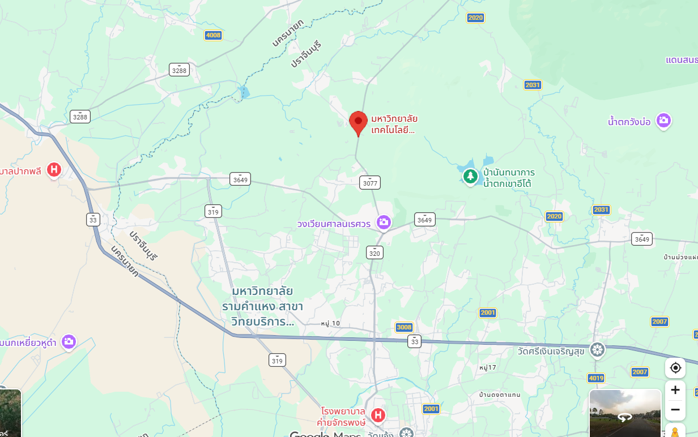

ข้อมูลการติดต่อ
กลุ่มงานรับเข้าศึกษา มหาวิทยาลัยเทคโนโลยีพระจอมเกล้าพระนครเหนือ วิทยาเขตปราจีนบุรี
129 หมู่ 21 ตำบลเนินหอม อำเภอเมืองปราจีนบุรี จังหวัดปราจีนบุรี 25230
โทรศัพท์/โทรสาร: 0-3721-7300-9
Facebook: Admission.KMUTNB - กลุ่มงานรับเข้าศึกษา มจพ.
แผนที่ตั้ง
มหาวิทยาลัยเทคโนโลยีพระจอมเกล้าพระนครเหนือ วิทยาเขตปราจีนบุรี
129 หมู่ 21 ตำบลเนินหอม อำเภอเมืองปราจีนบุรี จังหวัดปราจีนบุรี 25230
